Two-Dimensional View
Cognitive-core evolution and tool-augmented task execution organize the field's progress.
Tencent YouTu Lab Research Paper
The Paradigm Shift Toward Persistent Autonomous AI
A survey of how large language models are evolving from conversational answer generators into integrated AI systems for reasoning, action, memory, and self-improvement.
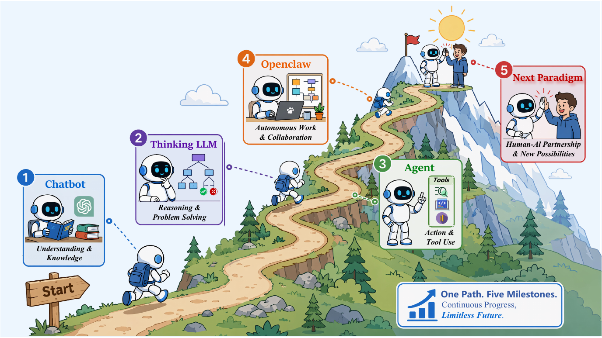
Overview
Large Language Models (LLMs) are undergoing a fundamental transformation from conversational generators into integrated AI systems for reasoning, action, memory, and self-improvement. We conceptualize this transition as a shift from Chatbot to Digital Colleague: from conversational answers to persistent work. We organize this transition along two tightly coupled dimensions. First, at the cognitive core level, LLMs evolve from Chatbot-era "fast thinking" systems driven by next-token prediction to Thinking LLMs that use inference-time computation, Chain-of-Thought reasoning, reflection, process supervision, and reinforcement learning for deliberate cognition. Second, at the tool-augmented task execution level, LLMs progress from fragile Agents that invoke tools into OpenClaw-style workstation systems (OpenClaw) with persistent Workspaces, skills, verification loops, and governance. The proposed "Workspace + Skill" paradigm turns episodic tool use into colleague-like work, enabling state persistence, reusable procedures, task closure, and experience reuse. Finally, we examine shifts in data construction from instruction-response pairs to State-Action-Observation trajectories and evaluation from static benchmarks to sandboxed, auditable, self-evolving AI ecosystems.
Cognitive-core evolution and tool-augmented task execution organize the field's progress.
Workspace + Skill explains how chatbot-style interaction becomes persistent digital work.
State, reusable procedures, verification, recoverability, and governance become system-level requirements.
Data and evaluation move toward trajectories, final-state evidence, and sandboxed task completion.
Roadmap
The paper organizes AI systems across cognitive-core evolution and tool-augmented task execution: from chatbots, to thinking LLMs, to agents, and then to persistent workspace systems.
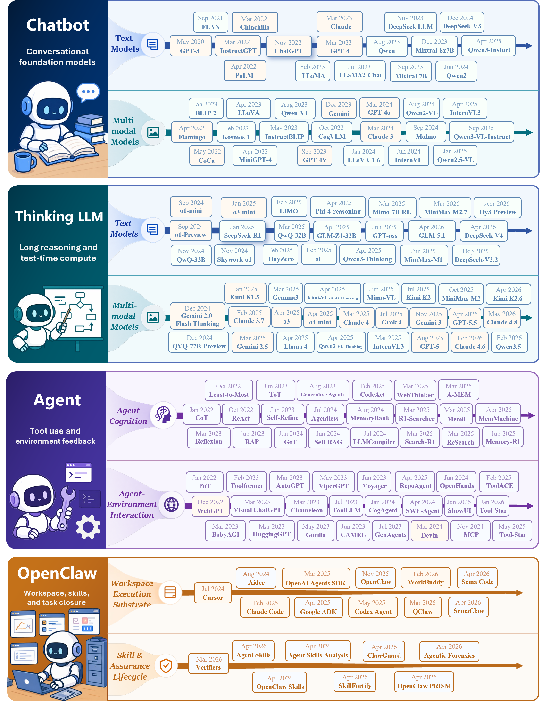
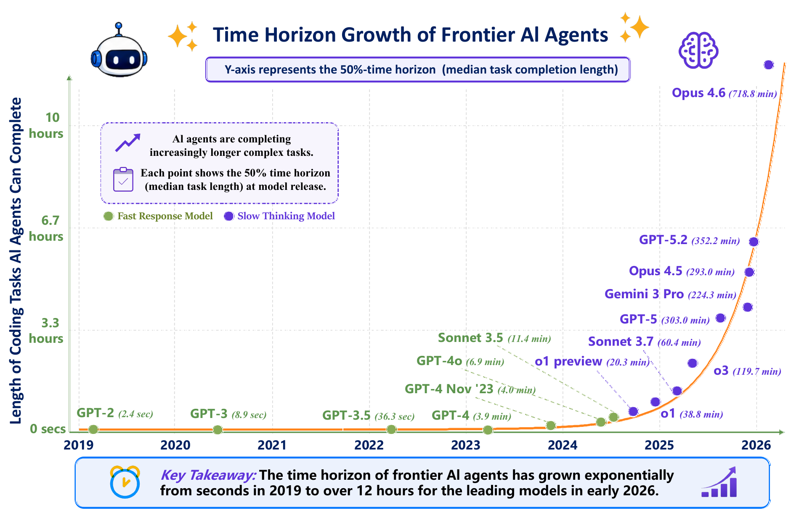
Cognitive Core
The first axis concerns how the model itself thinks. Chatbot-era systems are fast, stateless generators. Thinking LLMs introduce slower cognition through inference-time computation, long traces, reflection, process supervision, and reinforcement learning.
In the Chatbot Era, a user asks a natural-language question, the model performs fast single-pass inference over compressed parametric knowledge, and the system returns a fluent response.
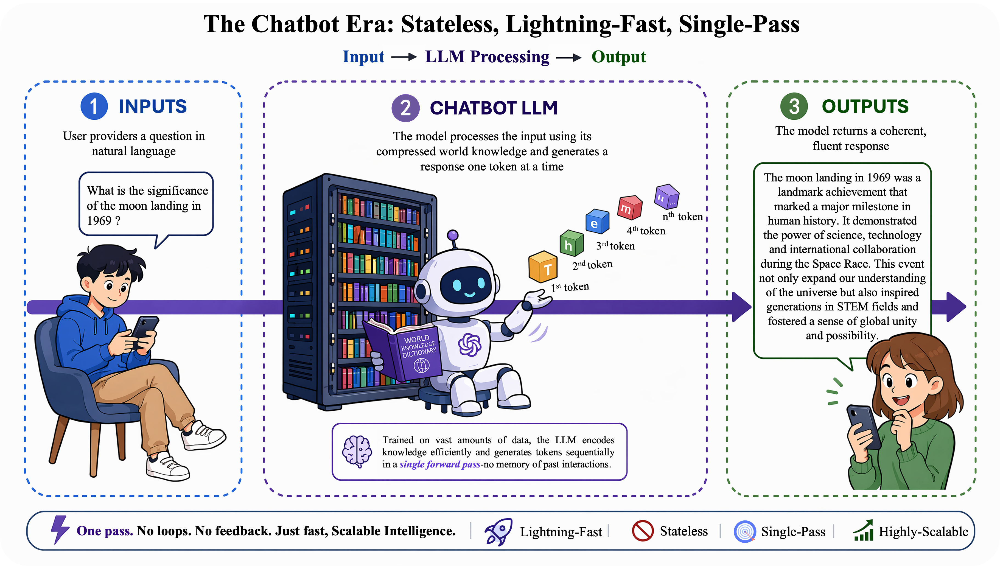
Thinking LLMs allocate additional computation at inference time. They explore alternatives, verify intermediate steps, and revise before returning an answer.
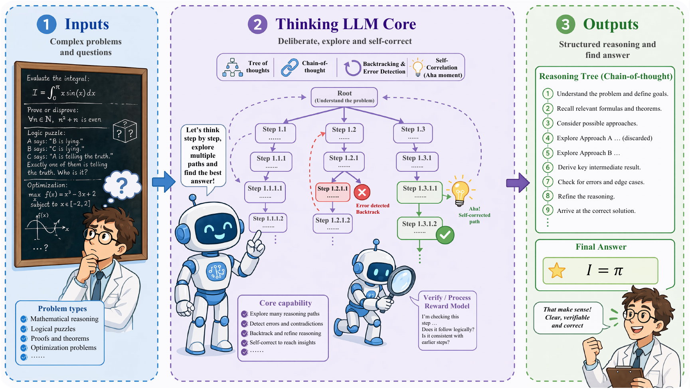
Representative-model tables summarize the transition from non-reasoning chatbot-era LLMs to reasoning-oriented Thinking LLMs.
| Model | Rel. | Para. | Type | Acc. | Model | Rel. | Para. | Type | Acc. |
|---|---|---|---|---|---|---|---|---|---|
| GPT-1 | 2018-06 | 117M | Text | Open | Orca | 2023-06 | 13B | Text | Closed |
| GPT-2 | 2019-02 | 1.5B | Text | Open | Llama 2 | 2023-07 | 7–70B | Text | Open |
| PLATO | 2019-10 | 132M | Text | Open | InternLM | 2023-07 | 7B/20B | Text | Open |
| T5 | 2019-10 | 60M–11B | Text | Open | Claude 2 | 2023-07 | - | Text | Closed |
| DialoGPT | 2019-11 | 117M/345M/762M | Text | Open | WizardLM | 2023-07 | 7B/13B/30B | Text | Open |
| Meena | 2020-01 | 2.6B | Text | Closed | Qwen | 2023-08 | 1.8–72B | Text | Open |
| BlenderBot | 2020-04 | 90M/2.7B/9.4B | Text | Open | Qwen-VL | 2023-08 | 9.6B | Multi | Open |
| GPT-3 | 2020-05 | 175B | Text | Closed | OpenFlamingo | 2023-08 | 3–9B | Multi | Open |
| PLATO-2 | 2020-06 | 93M/314M/1.6B | Text | Open | Code Llama-Instruct | 2023-08 | 7B/13B/34B | Code | Open |
| BlenderBot 2 | 2021-07 | 400M/2.7B | Text | Open | WizardMath | 2023-08 | 7B/13B/70B | Text | Open |
| Jurassic-1 | 2021-08 | 178B | Text | Closed | WizardCoder | 2023-08 | 7B/13B/34B | Code | Open |
| Codex | 2021-08 | 12M-12B | Text | Closed | IDEFICS | 2023-08 | 9B/80B | Multi | Open |
| HyperCLOVA | 2021-09 | 82B | Text | Closed | Phi-1.5 | 2023-09 | 1.3B | Text | Open |
| PLATO-XL | 2021-09 | 11B | Text | Open | Baichuan 2 | 2023-09 | 7B/13B | Text | Open |
| Gopher | 2021-12 | 280B | Text | Closed | GPT-4V | 2023-09 | - | Multi | Closed |
| ERNIE 3.0 Titan | 2021-12 | 260B | Text | Closed | Mistral 7B | 2023-09 | 7.3B | Text | Open |
| GLaM | 2021-12 | 1.2T-A97B | Text | Closed | Mixtral | 2023-09 | 7B | Text | Open |
| LaMDA | 2022-01 | 137B | Text | Closed | Kimi / Moonshot | 2023-10 | - | Text | Closed |
| AlphaCode | 2022-02 | 9B/41B | Text | Closed | ERNIE 4.0 | 2023-10 | - | Multi | Closed |
| InstructGPT | 2022-03 | 1.3–175B | Text | Closed | Fuyu | 2023-10 | 8B | Multi | Open |
| Chinchilla | 2022-03 | 70B | Text | Closed | Zephyr-7B | 2023-10 | 7B | Text | Open |
| CodeGen | 2022-03 | 350M/2B/6B/16B | Text | Open | ChatGLM3-6B | 2023-10 | 6B | Text | Open |
| PaLM | 2022-04 | 540B | Text | Closed | Skywork-13B | 2023-10 | 13B | Text | Open |
| Flamingo | 2022-04 | 80B | Multi | Closed | GPT-4 Turbo | 2023-11 | - | Text | Closed |
| OPT | 2022-05 | 125M–175B | Text | Open | Grok-1 | 2023-11 | 314B-A78.5B | Text | Open |
| GODEL | 2022-06 | 220M/770M | Text | Open | Yi | 2023-11 | 6B/34B | Text | Open |
| BLOOM | 2022-07 | 176B | Text | Open | CogVLM | 2023-11 | 17B | Multi | Open |
| BlenderBot 3 | 2022-08 | 3B/30B/175B | Text | Open | Claude 2.1 | 2023-11 | - | Text | Closed |
| PaLI / PaLI-X | 2022-09 | 17B/55B | Multi | Closed | Inflection-2 | 2023-11 | - | Text | Closed |
| Sparrow | 2022-09 | 70B | Text | Closed | DeepSeek Coder Instruct | 2023-11 | 1B–33B | Code | Open |
| CodeGeeX | 2022-09 | 13B | Text | Open | OpenChat 3.5 | 2023-11 | 7B | Text | Open |
| GLM-130B | 2022-10 | 130B | Text | Open | DeepSeek LLM | 2023-11 | 7B/67B | Text | Open |
| Galactica | 2022-11 | 120B | Text | Open | Orca 2 | 2023-11 | 7B/13B | Text | Open |
| BLIP-2 | 2023-01 | 4B-12B | Multi | Open | Mixtral 8x7B | 2023-12 | 47B-A13B | Text | Open |
| Llama | 2023-02 | 7–65B | Text | Open | Phi-2 | 2023-12 | 2.7B | Text | Open |
| Alpaca | 2023-03 | 7B | Text | Open | Gemini 1.0 | 2023-12 | - | Multi | Closed |
| Claude 1 | 2023-03 | - | Text | Closed | InternVL 1.0 | 2023-12 | 6B+ | Multi | Open |
| PanGu-Sigma | 2023-03 | 1.085T | Text | Closed | SOLAR-10.7B | 2023-12 | 10.7B | Text | Open |
| BloombergGPT | 2023-03 | 50B | Text | Closed | GLM-4 | 2024-01 | - | Text | Closed |
| ChatGLM-6B | 2023-03 | ~6.2B | Text | Open | GLM-4V | 2024-01 | 9B | Multi | Closed |
| GPT-4 | 2023-03 | - | Multi | Closed | LLaVA-NeXT | 2024-01 | 7–34B | Multi | Open |
| PaLM-E | 2023-03 | 562B | Multi | Closed | Stable LM 2 | 2024-01 | 1.6B | Text | Open |
| Vicuna | 2023-03 | 7B/13B | Text | Open | Yi-VL | 2024-01 | 6B/34B | Multi | Open |
| GPT-3.5 Turbo | 2023-03 | - | Text | Closed | Mistral Large | 2024-02 | - | Text | Closed |
| Pythia | 2023-04 | 70M–12B | Text | Open | Qwen 1.5 | 2024-02 | 0.5–72B | Text | Open |
| LLaVA | 2023-04 | 7B/13B | Multi | Open | Gemini 1.5 | 2024-02 | - | Multi | Closed |
| MiniGPT-4 | 2023-04 | 7B/13B | Multi | Open | OLMo | 2024-02 | 1B/7B | Text | Open |
| Dolly 2.0 | 2023-04 | 12B | Text | Open | StarCoder2 | 2024-02 | 3B/7B/15B | Code | Open |
| Stable LM | 2023-04 | 3B/7B | Text | Open | Reka Flash | 2024-02 | 21B | Multi | Closed |
| Falcon | 2023-05 | 7–180B | Text | Open | Gemma | 2024-03 | 2B/7B | Text | Open |
| MPT | 2023-05 | 7B/30B | Text | Open | Qwen1.5-MoE | 2024-03 | 14B-A2.7B | Text | Open |
| StarCoder | 2023-05 | 15.5B | Text | Open | DBRX | 2024-03 | 132B-A36B | Text | Open |
| RedPajama | 2023-05 | 3B/7B | Text | Open | Jamba | 2024-03 | 52B-A12B | Text | Open |
| InstructBLIP | 2023-05 | - | Multi | Open | Claude 3 | 2024-03 | - | Multi | Closed |
| PaLM 2 | 2023-05 | - | Text | Closed | Command R | 2024-03 | 35B | Text | Open |
| CodeT5+ | 2023-05 | 220M-16B | Code | Open | Inflection-2.5 | 2024-03 | - | Text | Closed |
| Inflection-1 | 2023-06 | - | Text | Closed | DeepSeek-VL | 2024-03 | 1.3B/7B | Multi | Open |
| Phi-1 | 2023-06 | 1.3B | Text | Open | Grok-1.5 | 2024-03 | - | Text | Closed |
| Aquila | 2023-06 | 7B/33B | Text | Open | MM1 | 2024-03 | 3B/7B/30B | Multi | Closed |
| ChatGLM2-6B | 2023-06 | 6B | Text | Open | Yi-9B | 2024-03 | 9B | Text | Open |
| Baichuan-Chat | 2023-06 | 7B/13B | Text | Open | Phi-3 | 2024-04 | 3.8–14B | Text | Open |
| XGen-7B | 2023-06 | 7B | Text | Open | Mixtral 8x22B | 2024-04 | 141B-A39B | Text | Open |
| Llama 3 | 2024-04 | 8B-A70B | Text | Open | Llama-3.1-Nemotron-70B | 2024-11 | 70B | Text | Open |
| Command R+ | 2024-04 | 104B | Text | Open | Hunyuan-Large | 2024-11 | 389B-A52B | Text | Open |
| InternVL 1.5 | 2024-04 | 26B | Multi | Open | OLMo 2 | 2024-11 | 7B/13B | Text | Open |
| Reka Core | 2024-04 | - | Multi | Closed | Pixtral Large | 2024-11 | 124B | Multi | Mixed |
| CodeQwen1.5 | 2024-04 | 7B | Code | Open | SmolVLM | 2024-11 | 2B | Multi | Open |
| IDEFICS2 | 2024-04 | 8B | Multi | Open | DeepSeek-V3 | 2024-12 | 671B-A37B | Text | Open |
| OpenELM | 2024-04 | 270M-3B | Text | Open | Llama 3.3 | 2024-12 | 70B | Text | Open |
| Snowflake Arctic | 2024-04 | 480B-A17B | Text | Open | PaliGemma 2 | 2024-12 | 3B/10B/28B | Multi | Open |
| Doubao | 2024-05 | - | Text | Closed | DeepSeek-VL2 | 2024-12 | 27B-A4.5B | Multi | Open |
| DeepSeek-V2 | 2024-05 | 236B-A21B | Text | Open | Falcon 3 | 2024-12 | 1B-10B | Text | Open |
| GPT-4o | 2024-05 | - | Multi | Closed | Granite 3.1 | 2024-12 | 1B-8B | Text | Open |
| CogVLM2 | 2024-05 | 19B | Multi | Open | InternVL2.5 | 2024-12 | 1B–78B | Multi | Open |
| MiniCPM-V | 2024-05 | 2–8B | Multi | Open | MiniMax-Text-01 | 2025-01 | 456B-A45.9B | Text | Open |
| Codestral | 2024-05 | 22B | Code | Open | MiniMax-VL-01 | 2025-01 | 456B-A45.9B | Multi | Open |
| Falcon 2 | 2024-05 | 11B | Multi | Open | Qwen2.5-Max | 2025-01 | - | Text | Closed |
| PaliGemma | 2024-05 | 3B | Multi | Open | MiniCPM-o 2.6 | 2025-01 | 8B | Multi | Open |
| Aya 23 | 2024-05 | 8B/35B | Text | Open | Qwen2.5-VL | 2025-01 | 3B/7B/72B | Multi | Open |
| Granite Code | 2024-05 | 3B-34B | Code | Open | Janus-Pro | 2025-01 | 1B/7B | Multi | Open |
| Qwen 2 | 2024-06 | 0.5–72B | Text | Open | Mistral Small 3 | 2025-01 | 24B | Text | Open |
| GLM-4-9B | 2024-06 | 9B | Text | Open | GPT-4.5 | 2025-02 | - | Text | Closed |
| Claude 3.5 Sonnet | 2024-06 | - | Multi | Closed | Phi-4-mini | 2025-02 | 4B | Text | Open |
| Cambrian-1 | 2024-06 | 3–34B | Multi | Open | Phi-4-multimodal | 2025-02 | 6B | Multi | Open |
| DeepSeek-Coder-V2 | 2024-06 | 236B-A21B | Code | Open | Command A | 2025-03 | 111B | Text | Closed |
| Nemotron-4 | 2024-06 | 340B | Text | Open | Mistral Small 3.1 | 2025-03 | 24B | Multi | Open |
| Gemma 2 | 2024-06 | 2B/9B/27B | Text | Open | Aya Vision | 2025-03 | 8B/32B | Multi | Open |
| Skywork-MoE | 2024-06 | 146B-A22B | Text | Open | Qwen2.5-VL-32B | 2025-03 | 32B | Multi | Open |
| InternVL 2.0 | 2024-07 | 1–76B | Multi | Open | OLMo 2 32B | 2025-03 | 32B | Text | Open |
| Llama 3.1 | 2024-07 | 8–405B | Text | Open | GPT-4.1 | 2025-04 | - | Multi | Closed |
| InternLM 2.5 | 2024-07 | 1.8–20B | Text | Open | GPT-4.1 mini | 2025-04 | - | Multi | Closed |
| GPT-4o mini | 2024-07 | - | Multi | Closed | GPT-4.1 nano | 2025-04 | - | Multi | Closed |
| Codestral Mamba | 2024-07 | 7B | Code | Open | Granite 3.3 | 2025-04 | 2B/8B | Text | Open |
| Mistral NeMo | 2024-07 | 12B | Text | Open | Kimi-VL-A3B-Instruct | 2025-04 | 16B-A2.8B | Multi | Open |
| SmolLM | 2024-07 | 135M/360M/1.7B | Text | Open | Amazon Nova Premier | 2025-04 | - | Multi | Closed |
| Mistral Large 2 | 2024-07 | 123B | Text | Open | Mistral Medium 3 | 2025-05 | - | Multi | Closed |
| LLaVA-OV | 2024-08 | 0.5–72B | Multi | Open | Devstral | 2025-05 | 24B | Code | Open |
| Grok-2 | 2024-08 | - | Text | Closed | ERNIE-4.5-300B-A47B | 2025-06 | 300B-A47B | Multi | Open |
| Grok-1.5V | 2024-08 | - | Multi | Closed | Qwen3-4B-Instruct | 2025-07 | 4B | Text | Open |
| Phi-3.5-mini-instruct | 2024-08 | 3.8B | Text | Open | Kimi K2 Instruct | 2025-07 | 1T-A32B | Text | Open |
| Phi-3.5-MoE-instruct | 2024-08 | 42B-A6.6B | Multi | Open | Qwen3-Coder | 2025-07 | 480B-A35B | Text | Open |
| Jamba 1.5 | 2024-08 | 398B-A94B | Text | Open | FastVLM | 2025-07 | 0.5B/1.5B/7B | Multi | Open |
| Qwen2-VL | 2024-09 | 2–72B | Multi | Open | LFM2-VL | 2025-08 | 450M/1.6B/3B | Multi | Open |
| Llama 3.2 Text | 2024-09 | 1B/3B | Text | Open | LongCat-Flash-Chat | 2025-08 | 560B-A27B | Multi | Open |
| Llama 3.2 Vision | 2024-09 | 11B/90B | Multi | Open | Qwen3-Next | 2025-09 | 81B-A3B | Text | Open |
| Qwen2.5 | 2024-09 | 0.5–72B | Text | Open | Qwen3-VL | 2025-09 | 235B-A22B | Multi | Open |
| Pixtral | 2024-09 | 12B | Multi | Open | Mistral Large 3 | 2025-12 | 675B-A41B | Multi | Open |
| OLMoE | 2024-09 | 7B-A1B | Text | Open | Ministral 3 Instruct | 2025-12 | 3B/8B/14B | Multi | Open |
| Molmo | 2024-09 | 7B/72B | Multi | Open | Devstral 2 | 2025-12 | 123B | Text | Open |
| Claude 3.5 Haiku | 2024-10 | - | Text | Closed | Devstral Small 2 | 2025-12 | 24B | Text | Open |
| Aya Expanse | 2024-10 | 8B/32B | Text | Open | Qwen3-Coder-Next | 2026-02 | 80B-A3B | Text | Open |
| Granite 3.0 | 2024-10 | 1B-8B | Text | Open | LongCat-Flash-Lite | 2026-02 | 68.5B-A3B | Text | Open |
| Yi-Lightning | 2024-10 | - | Text | Closed | Mistral Small 4-instruct | 2026-03 | 119B-A6B | Multi | Open |
| Qwen2.5-Coder | 2024-11 | 0.5–32B | Text | Open | LongCat-Next | 2026-03 | 68.5B-A3B | Multi | Open |
| Model | Rel. | Para. | Type | Acc. | Model | Rel. | Para. | Type | Acc. |
|---|---|---|---|---|---|---|---|---|---|
| o1-preview | 2024-09 | - | Text | Closed | Claude 4 Opus | 2025-05 | - | Multi | Closed |
| o1-mini | 2024-09 | - | Text | Closed | MiniMax-M1 | 2025-06 | 456B/46B | Text | Open |
| Marco-o1 | 2024-11 | 7B | Text | Open | Kimi-Dev-72B | 2025-06 | 72B | Code | Open |
| QwQ-32B-Preview | 2024-11 | 32B | Text | Open | MiMo-VL-7B | 2025-06 | 7B | Multi | Open |
| Skywork-o1 Open | 2024-11 | 8B | Text | Open | Hunyuan-A13B-Instruct | 2025-06 | 80B-A13B | Text | Open |
| o1 | 2024-12 | - | Text | Closed | Kimi K2 | 2025-07 | 1T/32B | Multi | Open |
| o1-pro | 2024-12 | - | Text | Closed | Qwen3-Coder | 2025-07 | 480B/35B | Code | Open |
| Gemini 2.0 Flash Thinking | 2024-12 | - | Multi | Closed | Qwen3-235B-Thinking-2507 | 2025-07 | 235B/22B | Text | Open |
| QVQ-72B-Preview | 2024-12 | 72B | Multi | Open | Grok 4 | 2025-07 | - | Multi | Closed |
| DeepSeek-R1-Zero | 2025-01 | 671B/37B | Text | Open | SmolLM3 | 2025-07 | 3B | Text | Open |
| DeepSeek-R1 | 2025-01 | 671B/37B | Text | Open | GPT-5 | 2025-08 | ~300B | Multi | Closed |
| R1-Distill-Qwen | 2025-01 | 1.5B–32B | Text | Open | DeepSeek-V3.1 | 2025-08 | 685B/37B | Text | Open |
| R1-Distill-Llama | 2025-01 | 8B/70B | Text | Open | GPT-oss-120B | 2025-08 | 117B/5.1B | Text | Open |
| Kimi k1.5 | 2025-01 | - | Multi | Closed | GPT-oss-20B | 2025-08 | 20B | Text | Open |
| Sky-T1-32B | 2025-01 | 32B | Text | Open | Claude Opus 4.1 | 2025-08 | - | Multi | Closed |
| o3-mini | 2025-01 | - | Text | Closed | ERNIE 4.5-Thinking | 2025-09 | 21B/3B | Text | Open |
| s1 | 2025-02 | 32B | Text | Open | Claude Sonnet 4.5 | 2025-09 | - | Multi | Closed |
| LIMO | 2025-02 | 32B | Text | Open | Grok 4 Fast | 2025-09 | - | Multi | Closed |
| Grok 3 | 2025-02 | - | Multi | Closed | MiniMax-M2 | 2025-10 | 230B/10B | Multi | Open |
| Grok 3 mini | 2025-02 | - | Text | Closed | Claude Haiku 4.5 | 2025-10 | - | Multi | Closed |
| Claude 3.7 Sonnet | 2025-02 | - | Multi | Closed | Grok 4.1 Fast | 2025-10 | - | Multi | Closed |
| Hunyuan-T1-Preview | 2025-02 | - | Text | Closed | Ring-1T | 2025-10 | 1T-A50B | Text | Open |
| Open-Reasoner-Zero | 2025-02 | 7B/32B | Text | Open | GPT-5.1 | 2025-11 | - | Multi | Closed |
| TinyZero | 2025-02 | 3B | Text | Open | Gemini 3 Pro | 2025-11 | - | Multi | Closed |
| Eurus-2-PRIME | 2025-02 | 7B | Text | Open | Grok 4.1 | 2025-11 | - | Multi | Closed |
| Bespoke-Stratos | 2025-02 | 7B | Text | Open | Claude Opus 4.5 | 2025-11 | - | Multi | Closed |
| Light-R1 | 2025-02 | 7B/14B | Text | Open | DeepSeek-V3.2 | 2025-12 | 671B/37B | Text | Open |
| Hunyuan-TurboS | 2025-02 | 560B-A56B | Text | Closed | DeepSeek-V3.2-Speciale | 2025-12 | 671B/37B | Text | Open |
| Gemma 3 | 2025-03 | 4B/12B/27B | Multi | Open | Gemini 3 Flash | 2025-12 | - | Multi | Closed |
| QwQ-32B | 2025-03 | 32B | Text | Open | MiMo-V2-Flash | 2025-12 | 309B/15B | Text | Open |
| Hunyuan-T1 | 2025-03 | - | Text | Closed | GLM-4.7 | 2025-12 | 358B | Text | Open |
| Gemini 2.5 Pro | 2025-03 | - | Multi | Closed | Devstral 2 | 2025-12 | 123B | Code | Open |
| DeepSeek-V3-0324 | 2025-03 | 671B/37B | Text | Open | GPT-5.2 | 2025-12 | - | Multi | Closed |
| Phi-4-reasoning | 2025-04 | 14B | Text | Open | LongCat-Flash-Thinking-2601 | 2026-01 | 560B-A27B | Text | Open |
| Phi-4-reasoning-plus | 2025-04 | 14B | Text | Open | Step 3.5 Flash | 2026-02 | - | Text | Open |
| Qwen3 | 2025-04 | 0.6B–235B | Text | Open | Kimi K2.5 | 2026-02 | 1T/32B | Multi | Open |
| o3 | 2025-04 | - | Multi | Closed | Qwen3.5 | 2026-02 | 397B/17B | Multi | Open |
| o4-mini | 2025-04 | - | Multi | Closed | Gemini 3.1 Pro | 2026-02 | - | Multi | Closed |
| Kimi-VL-A3B-Thinking | 2025-04 | 2.8B act. | Multi | Open | GPT-5.3-Codex | 2026-02 | - | Code | Closed |
| GLM-Z1-32B | 2025-04 | 32B | Text | Open | Claude Opus 4.6 | 2026-02 | - | Multi | Closed |
| Z1-Rumination-32B | 2025-04 | 32B | Text | Open | MiniMax-M2.5 | 2026-02 | 230B-A10B | Text | Open |
| GLM-Z1-9B | 2025-04 | 9B | Text | Open | GPT-5.4 | 2026-03 | - | Multi | Closed |
| Llama 4 Maverick | 2025-04 | 400B/17B | Multi | Open | Nemotron-Cascade-2 | 2026-03 | 30B/3B | Code | Open |
| Llama 4 Scout | 2025-04 | 109B/17B | Multi | Open | GPT-5.3 | 2026-03 | - | Multi | Closed |
| Seed-Thinking-v1.5 | 2025-04 | - | Text | Open | MiniMax-M2.7 | 2026-03 | 230B-A10B | Text | Open |
| Nemotron-Ultra-253B | 2025-04 | 253B/17B | Text | Open | MiMo-V2.5-Pro | 2026-04 | - | Multi | Open |
| ERNIE-4.5-VL | 2025-04 | 424B-A47B | Multi | Open | Kimi K2.6 | 2026-04 | 1T/32B | Multi | Open |
| Codex-1 | 2025-05 | - | Code | Closed | GLM-5.1 | 2026-04 | 754B | Text | Open |
| DeepSeek-R1-0528 | 2025-05 | 671B/37B | Text | Open | DeepSeek-V4 | 2026-04 | 1.6T | Text | Open |
| R1-Distill-Qwen3-8B | 2025-05 | 8B | Text | Open | Qwen3.6 | 2026-04 | 35B/3B+ | Multi | Open |
| R1-Distill-Qwen3-32B | 2025-05 | 32B | Text | Open | Gemma 4 | 2026-04 | 2B–26B | Multi | Open |
| MiMo-7B-RL | 2025-05 | 7B | Text | Open | GPT-5.5 | 2026-04 | - | Multi | Closed |
| MiMo-7B-RL-0530 | 2025-05 | 7B | Text | Open | Claude Opus 4.7 | 2026-04 | - | Multi | Closed |
| Doubao 1.5 Pro Thinking | 2025-05 | - | Text | Closed | Claude Mythos Preview | 2026-04 | - | Multi | Closed |
| Gemini 2.5 Flash | 2025-05 | - | Multi | Closed | Grok 4.3 | 2026-05 | - | Multi | Closed |
| InternVL3 | 2025-05 | 2B–78B | Multi | Open | Ring-2.6-1T | 2026-05 | 1T-A63B | Text | Open |
| Devstral | 2025-05 | 24B | Code | Open | ERNIE 5.1 | 2026-05 | - | Multi | Closed |
| Claude 4 Sonnet | 2025-05 | - | Multi | Closed | Claude Opus 4.8 | 2026-05 | - | Multi | Closed |
Task Execution
The second axis asks how a stronger cognitive core becomes a system that can act. The Agent Era introduces environment-action-feedback loops. The OpenClaw Era embeds action inside persistent workspaces.
Agent systems break from single-turn answering by allowing LLMs to plan, call tools, browse, write code, manipulate files, and react to observations.
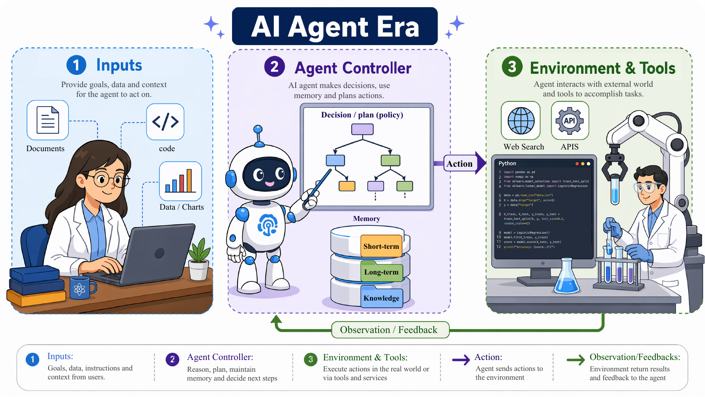
OpenClaw-style systems treat the workspace as the host of work, turning actions into inspectable operations over files, terminals, browsers, services, and skills.
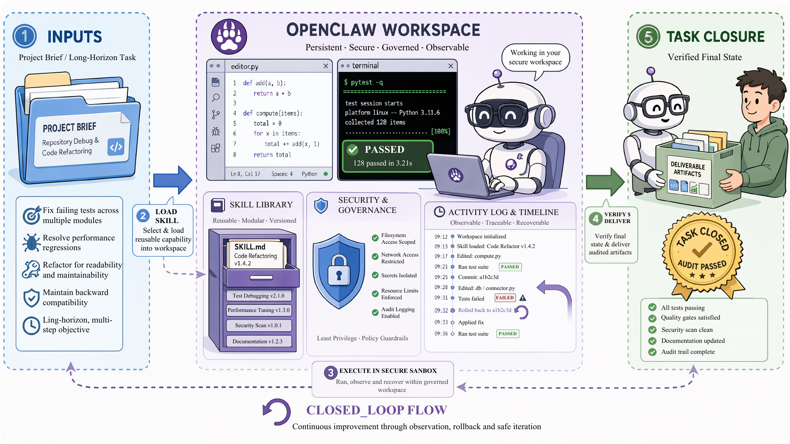
The boundary table clarifies why OpenClaw is not just another agent loop: the organizing abstraction changes from external tool interaction to persistent workspace-based task hosting.
| Dimension | Agent Era | OpenClaw Era |
|---|---|---|
| Organizing abstraction | Environment-action-feedback loop | Persistent workspace for task hosting |
| Unit of action | Tool call or external API invocation | Workspace operation over files, terminals, browsers, services, and skills |
| State model | Episodic observations and short-horizon memory | Durable files, sessions, logs, repositories, local memory, and snapshots |
| Knowledge reuse | Prompt patterns, retrieved memory, or ad-hoc demonstrations | Reusable skill packages with instructions, scripts, dependencies, examples, and checks |
| Evaluation focus | Action correctness and trajectory success rate | Task closure, final-state verification, repeatability, and auditability |
| Safety boundary | Prompt-level guardrails and tool-use policies | Runtime permissions, provenance tracking, audit logs, and governance over workspace changes |
| Work | Year | Category | Role | Key Contribution |
|---|---|---|---|---|
| ReAct | 2022 | Agent Architecture | Agent Framework | Thought-Action-Observation loop |
| HuggingGPT | 2023 | Perception | Agent System | LLM orchestration of Hugging Face models |
| Reflexion | 2023 | Planning | Agent Framework | Language reflections on failed attempts |
| Generative Agents | 2023 | Memory | Agent System | Memory stream with reflections |
| Toolformer | 2023 | Tool Use | Agent Model | Self-supervised tool-call learning |
| WebArena | 2023 | Benchmark | Evaluation | Realistic web task environments |
Workspace + Skill
Workspace + Skill turns episodic interaction into durable digital work. A workspace provides state, evidence, recoverability, and consequences. A skill provides reusable operational knowledge.
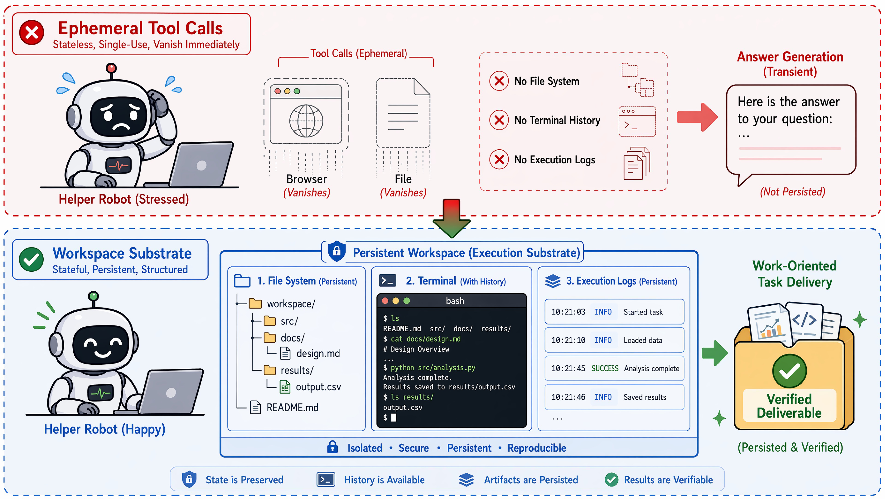
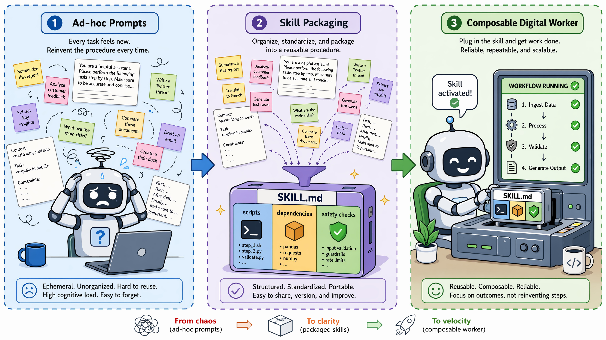
| Work | Year | Category | Role | Key Contribution |
|---|---|---|---|---|
| OpenClaw | 2026 | Workspace | Agent Framework | Persistent workspace with tools, channels, and skills |
| OpenHands | 2024 | Workspace | Agent Platform | Code editing, shell execution, and browsing in controlled environments |
| SWE-agent | 2024 | Workspace | Agent-Computer Interface | Repository navigation and test-feedback interface for agents |
| Voyager | 2023 | Skill | Agent System | Executable skill library learned from environment feedback |
| Anthropic Agent Skills | 2026 | Skill | Skill Infrastructure | Folder-based skills with instructions, scripts, and resources |
| ClawGuard | 2026 | Governance | Runtime Guardrail | File, command, network, and skill boundary enforcement |
Data & Eval
As AI systems move from answering questions to acting in workspaces, both data and evaluation must change. The unit of learning and measurement becomes the full state-action-observation trajectory and the verified final state.
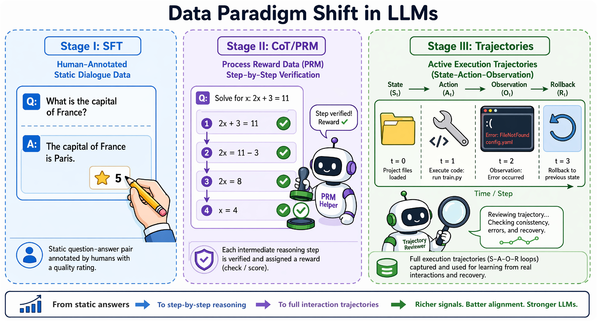
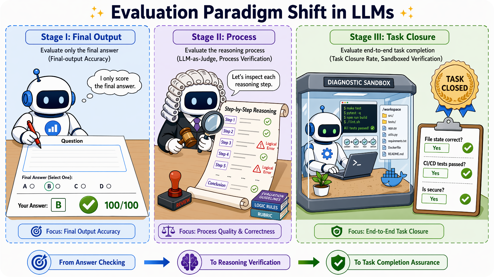
Agent and OpenClaw data must capture tool outputs, UI states, file changes, terminal errors, permissions, workspace snapshots, skills, and final-state evidence.
| Stage | Core Data Unit | Training / Supervision Signal | Representative Resources | Evaluation Focus |
|---|---|---|---|---|
| Chatbot | Static corpora and instruction–response pairs | Human demonstrations, preference comparisons, safety labels, and dialogue corrections | InstructGPT/RLHF, FLAN/T0, Self-Instruct and open SFT data | Answer correctness, fluency, helpfulness, preference alignment, and instruction following on mostly static inputs |
| Thinking LLM Era | Reasoning-process traces and intermediate solution paths | Chain-of-thought rationales, self-generated reasoning, step-wise verification, process rewards, and preference optimization | CoT / zero-shot CoT, Self-Consistency and ToT, PRM800K and Math-Shepherd, DeepSeek-R1 | Reliability of the reasoning path, verifiable math/code performance, step-level correctness, and robustness beyond final-answer accuracy |
| Agent Era | State–action–observation trajectories with tool feedback | Tool-call traces, API arguments, execution results, environment feedback, and multi-step recovery signals | Toolformer, API-Bank / Gorilla / ToolBench, WebArena and OSWorld | Task success in interactive environments, correct tool selection, argument generation, state tracking, and feedback-driven continuation |
| OpenClaw / Workspace Era | Workspace-level trajectories plus reusable skills and final-state evidence | File, shell, browser, UI, permission, snapshot, skill-package, and safety-policy traces with executable verification | SWE-bench, ToolSandbox, ClawsBench, ATBench-Claw and ClawSafety | End-to-end task closure, state verifiability, reproducibility, efficiency, rollback behavior, and trajectory-level safety |
Next-generation systems must be assessed by reasoning validity, state changes, reliability, efficiency, reproducibility, safety, and task closure.
| Stage | Evaluation Object | Core Metrics | Representative Benchmarks | Main Limitation |
|---|---|---|---|---|
| Final-Output Evaluation | Static answers, labels, generated text, or executable final outputs | Accuracy, exact match, BLEU/ROUGE, preference win rate, and Pass@1 | MMLU, GSM8K / MATH, GPQA / FrontierMath, BIG-Bench / HELM | Scores the endpoint but cannot reveal whether the model used a valid reasoning path or merely reached the right answer accidentally |
| Process-Level Evaluation | Reasoning traces, intermediate steps, critiques, and verification paths | Step correctness, judge preference, process-reward quality, consistency, and contamination resistance | Hard2Verify / DeltaBench, ProcessBench / PRMBench | Improves trace inspection but may rely on judge models, incomplete process labels, or reasoning that is not grounded in external state |
| Task-Closure Evaluation | Interactive trajectories and final workspace states after tool, web, file, or UI operations | Task success rate, final-state verification, tool-call efficiency, reliability, reproducibility, and trajectory-level safety | SWE-bench, WebArena, OSWorld, ToolSandbox / tau-bench | Requires executable environments, reproducible initial states, trajectory logs, replay mechanisms, and costly final-state checks |
| Workspace/OpenClaw Evaluation | Persistent workspaces with skills, permissions, snapshots, external services, and auditable action chains | Closure rate, unsafe-action rate, rollback behavior, skill stability, state diffs, auditability, and governance compliance | Claw-Eval, ClawBench, ClawsBench, ATBench-Claw, ClawSafety | Makes evaluation realistic but increases infrastructure cost, safety risk, simulator-design burden, and cross-run comparability challenges |
Representative final-output benchmark scores across MMLU, GSM8K, MATH, HumanEval, and related metrics.
| Model | Base Model | MMLU | MMLU-Pro | GSM8K | MATH | MATH-500 | HumanEval |
|---|---|---|---|---|---|---|---|
| GPT-5.4 | - | 94.0 | 87.0 | 98.1 | 90.2 | - | 94.1 |
| Claude Opus 4.6 | - | 92.1 | 82.5 | 97.8 | 91.5 | - | 92.4 |
| Gemini 3.1 Pro | - | 92.6 | 91.2 | 94.2 | 85.3 | - | 87.6 |
| DeepSeek-V4-Pro-Base | - | 90.1 | 73.5 | 92.6 | 64.5 | - | 76.8 |
| Qwen3.7 Max | - | - | 89.6 | - | 94.6 | - | 92.4 |
| GLM-5.1 | - | 89.0 | 86.0 | 95.3 | 83.4 | - | 88.6 |
| SAGE-32B (Think) | Qwen2.5-32B | 90.20 | 79.27 | 96.74 | - | 91.8 | - |
| Warmup K&K | Qwen2.5-14B | - | 62.7 | - | - | 77.4 | - |
| AceMath-72B-Instruct | Qwen2.5-Math-72B-Instruct | - | - | 96.4 | 86.1 | - | - |
| PromptCoT-DS-7B | DeepSeek-R1-Distill-Qwen-7B | - | - | 92.6 | - | 93.0 | - |
| Nemotron-CrossThink-32B | Qwen2.5-32B | 83.60 | 69.43 | - | - | 84.00 | - |
| Introspective X Training | - | 50.9 | 27.9 | 59.5 | 46.5 | - | 54.9 |
| CoT2-Meta | Claude Sonnet 4.5 | - | 88.4 | 98.6 | 92.8 | - | 72.8 |
| Guideline Forest | GPT-4o-mini | - | - | 93.5 | - | 69.2 | 95.4 |
| STOP-ECN | DeepSeek-R1-Distill-Qwen-7B | - | - | 91.1 | - | 86.8 | - |
| FastMCTS+Branch-DPO | FastMCTS-7B | - | - | 89.9 | 75.4 | - | - |
| FastMCTS | Qwen2.5-7B | - | - | 88.9 | 74.0 | - | - |
| Rejection Sampling | Qwen2.5-7B | - | - | 87.1 | 70.0 | - | - |
| SBS | DeepSeek-Math-7B-Base | - | - | 84.1 | 66.3 | - | - |
| MCTS | DeepSeek-Math-7B-Base | - | - | 83.2 | 64.0 | - | - |
| DeepSeekMath-7B-RL | DeepSeekMath-7B | - | - | 88.2 | 51.7 | - | - |
| SimPO | Qwen2.5-Math-7B-Instruct | - | - | 88.8 | 40.0 | 56.6 | - |
| Self-Explore | DeepSeek-Math-7B-Base | - | - | 78.6 | 37.7 | - | - |
| DeepSeek-Coder-V2-Instruct | - | - | - | 94.9 | 75.7 | - | 90.2 |
| OMI2 (Full) | Qwen2.5-Coder-7B | - | - | 88.5 | 73.2 | - | - |
| CODEI/O | Qwen2.5-Coder-7B | - | - | 86.4 | 71.9 | - | - |
| PyEdu | Qwen2.5-Coder-7B | - | - | 85.8 | 71.4 | - | - |
| MathCoder-CL | Code-Llama-7B | - | - | 67.8 | 30.2 | - | - |
Process-oriented evaluation across Hard2Verify, DeltaBench, ProcessBench, and PRMBench.
| Model / Method | Base Model | Hard2Verify | DeltaBench | ProcessBench | PRMBench | ||||||||||||||
|---|---|---|---|---|---|---|---|---|---|---|---|---|---|---|---|---|---|---|---|
| Step A | Step F1 | Resp. A | Resp. F1 | ErrID A | ErrID F1 | Avg. | HM | Corr. | Err. | GSM8K | MATH | Olympiad | Omni | Overall | Simp. | Sound. | Sens. | ||
| GPT-5 | - | 86.53 | 85.83 | 89.69 | 89.52 | 70.61 | 69.72 | - | - | - | - | - | - | - | - | - | - | - | - |
| Gemini 2.5 Pro | - | 83.37 | 83.09 | 85.73 | 85.46 | 52.46 | 52.46 | - | - | - | - | - | - | - | - | - | - | - | - |
| Claude Sonnet 4 | - | 70.61 | 60.37 | 78.24 | 73.44 | 53.45 | 39.30 | - | - | - | - | - | - | - | - | - | - | - | - |
| DeepSeek-R1 | - | 68.92 | 62.30 | 73.95 | 72.75 | 54.23 | 45.35 | - | - | - | - | - | - | - | - | 67.8 | 62.9 | 71.4 | 77.1 |
| Qwen3-235B-A22B | - | 72.55 | 64.03 | 79.42 | 77.87 | 60.90 | 50.78 | - | - | - | - | - | - | - | - | - | - | - | - |
| Qwen3-Next-80B-A3B | - | 67.91 | 54.69 | 75.08 | 68.31 | 58.29 | 43.05 | - | - | - | - | - | - | - | - | - | - | - | - |
| GPT-4o | - | - | - | - | - | - | - | 49.9 | 48.7 | 42.0 | 57.9 | 79.2 | 63.6 | 51.4 | 53.5 | 66.8 | 59.7 | 70.9 | 75.8 |
| o1-mini | - | - | - | - | - | - | - | - | - | - | - | 93.2 | 88.9 | 87.2 | 82.4 | 68.8 | 64.6 | 72.1 | 75.5 |
| Gemini-2.0-thinking-exp-1219 | - | - | - | - | - | - | - | - | - | - | - | - | - | - | - | 68.8 | 66.2 | 71.8 | 75.3 |
| QwQ-32B-Preview | - | - | - | - | - | - | - | - | - | - | - | 88.0 | 78.7 | 57.8 | 61.3 | 63.6 | 56.4 | 68.2 | 73.5 |
| Llama-3.3-70B-Instruct | - | 54.28 | 18.37 | 57.04 | 28.16 | 49.44 | 2.50 | - | - | - | - | 82.9 | 59.4 | 46.7 | 43.0 | - | - | - | - |
| Qwen2.5-72B-Instruct | - | 56.01 | 26.36 | 61.06 | 46.89 | 26.49 | 16.38 | - | - | - | - | 76.2 | 61.8 | 54.6 | 52.2 | - | - | - | - |
| Qwen2.5-14B-Instruct | - | 60.45 | 47.59 | 63.40 | 63.23 | 43.47 | 18.86 | - | - | - | - | 69.3 | 53.3 | 45.0 | 41.3 | - | - | - | - |
| Qwen2.5-Math-72B-Instruct | - | - | - | - | - | - | - | - | - | - | - | 65.8 | 52.1 | 32.5 | 31.7 | 57.4 | 55.1 | 61.1 | 67.1 |
| Qwen2.5-Math-PRM-72B | Qwen2.5-Math-72B | 55.82 | 35.50 | 66.80 | 64.91 | 41.80 | 37.28 | - | - | - | - | 87.3 | 80.6 | 74.3 | 71.1 | 68.2 | 54.6 | 73.9 | 77.0 |
| Qwen2.5-Math-PRM-7B | Qwen2.5-Math-7B | 57.56 | 42.37 | 63.08 | 57.57 | 35.03 | 32.50 | - | - | - | - | 82.4 | 77.6 | 67.5 | 66.3 | 65.5 | 52.1 | 71.0 | 75.5 |
| UniversalPRM-7B | Qwen2.5-Math-7B-Instruct | 64.17 | 60.27 | 54.74 | 41.46 | 26.08 | 25.97 | - | - | - | - | 85.8 | 77.7 | 67.6 | 66.4 | - | - | - | - |
| ActPRM-X | Qwen2.5-Math-PRM-7B | - | - | - | - | - | - | - | - | - | - | 82.7 | 82.0 | 72.0 | 67.3 | 66.7 | 54.5 | 72.7 | 75.6 |
| ActPRM | Qwen2.5-Math-7B | - | - | - | - | - | - | - | - | - | - | 81.6 | 79.8 | 71.4 | 67.0 | 65.5 | 53.6 | 71.3 | 75.2 |
| RefCritic-R1-14B | DeepSeek-R1-Distill-Qwen-14B | - | - | - | - | - | - | - | - | - | - | 86.3 | 82.0 | 67.6 | 72.3 | - | - | - | - |
| RefCritic-Qwen-14B | Qwen2.5-14B-Instruct | - | - | - | - | - | - | - | - | - | - | 81.9 | 71.2 | 58.1 | 60.7 | - | - | - | - |
| FlexiVe (Think@64) | DeepSeek-R1-Distill-Qwen-14B | - | - | - | - | - | - | - | - | - | - | 88.1 | 90.1 | 86.7 | 80.4 | - | - | - | - |
| FlexiVe (Flex@128) | DeepSeek-R1-Distill-Qwen-14B | - | - | - | - | - | - | - | - | - | - | 83.0 | 85.0 | 80.0 | 75.2 | - | - | - | - |
| GenPRM-32B (Maj@8) | Qwen2.5-32B | - | - | - | - | - | - | - | - | - | - | 85.1 | 86.3 | 78.9 | 80.1 | - | - | - | - |
| GenPRM-7B (Maj@8) | Qwen2.5-7B | - | - | - | - | - | - | - | - | - | - | 81.0 | 85.7 | 78.4 | 76.8 | - | - | - | - |
| SPC (Round 2) | Qwen2.5-7B-Instruct | - | - | - | - | - | - | 60.5 | 59.5 | 68.2 | 52.8 | - | - | - | - | - | - | - | - |
| SPC (Round 1) | Qwen2.5-7B-Instruct | - | - | - | - | - | - | 58.8 | 57.3 | 68.4 | 49.3 | - | - | - | - | - | - | - | - |
| SPC (Round 0) | Qwen2.5-7B-Instruct | - | - | - | - | - | - | 54.9 | 53.5 | 45.9 | 64.0 | - | - | - | - | - | - | - | - |
| Qwen2.5-Math-7B-PRM800K | Qwen2.5-Math-7B | - | - | - | - | - | - | 58.5 | 41.3 | 90.1 | 26.8 | 68.2 | 62.6 | 50.7 | 44.3 | - | - | - | - |
| Pure-PRM-7B | Qwen2.5-Math-7B | - | - | - | - | - | - | - | - | - | - | 69.0 | 66.5 | 48.4 | 45.9 | 65.3 | 52.2 | 70.2 | 75.8 |
| Skywork-PRM-7B | Qwen2.5-Math-7B | 38.52 | 34.12 | 56.77 | 29.81 | 11.56 | 8.36 | - | - | - | - | 70.8 | 53.6 | 22.9 | 21.0 | 65.1 | 59.6 | 68.5 | 73.3 |
| Math-Shepherd-PRM-7B | Mistral-7B | - | - | - | - | - | - | 53.3 | 14.3 | 7.69 | 98.8 | 47.9 | 29.5 | 24.8 | 23.8 | 47.0 | 47.1 | 45.7 | 60.7 |
| RLHFlow-PRM-Mistral-8B | Llama-3.1-8B | - | - | - | - | - | - | - | - | - | - | 50.4 | 33.4 | 13.8 | 15.8 | 54.4 | 46.7 | 57.5 | 68.5 |
| ReasonEval-34B | CodeLlama-34B | - | - | - | - | - | - | - | - | - | - | - | - | - | - | 60.5 | 51.5 | 63.0 | 73.1 |
| ReasonFlux-PRM-7B | DeepSeek-R1-Distill-Qwen-7B | 53.09 | 22.40 | 55.89 | 53.82 | 42.48 | 28.71 | - | - | - | - | - | - | - | - | - | - | - | - |
| uPRM | Qwen2.5-Math-7B | - | - | - | - | - | - | - | - | - | - | 58.3 | 52.6 | 42.7 | 39.8 | - | - | - | - |
Notes. Hard2Verify reports balanced accuracy and F1 for step, response, and error-identification tasks; DeltaBench reports average, HM, correct-step recall, and error-step recall; ProcessBench and PRMBench report their original F1/PRMScore metrics.
Interactive task success and pass-rate evaluation across SWE, terminal, OS, web, and browsing benchmarks.
| Model / Method | Base Model | SWE-V | Terminal 2.0 | OSWorld-V | WebArena-V | BrowseComp | MCP-Atlas |
|---|---|---|---|---|---|---|---|
| GPT-5.4 xHigh | - | - | 75.1 | 75.0 | 67.3 | 82.7 | 67.2 |
| Claude Opus 4.6 Max | - | 80.8 | 65.4 | - | - | 83.7 | 73.8 |
| Gemini 3.1 Pro High | - | 80.6 | 68.5 | - | - | 85.9 | 69.2 |
| DeepSeek-V4-Pro Max | - | 80.6 | 67.9 | - | - | 83.4 | 73.6 |
| Kimi-K2.6 Thinking | - | 80.2 | 66.7 | - | - | 83.2 | 66.6 |
| GLM-5.1 Thinking | - | - | 63.5 | - | - | 79.3 | 71.8 |
| UI-TARS-2 | UI-TARS-2 | 68.7 | 45.3* | - | - | 29.6* | - |
| OpenCUA-72B | Qwen2.5-VL-72B | - | - | 45.0 | - | - | - |
| SWE-Exp | Claude 4 Sonnet | 73.0 | - | - | - | - | - |
| Kimi-Dev | Qwen2.5-72B-Base | 60.4 | - | - | - | - | - |
| SWE-Master-32B-RL | Qwen2.5-Coder-32B | 61.4 | - | - | - | - | - |
| PDR+RTV | Gemini 3.1 Pro | 76.60 | 64.77 | - | - | - | - |
| TACT-GATE | Qwen3.5-27B | 73.3 | 36.0 | - | - | - | - |
| IHR+NLAH | GPT-5.4-mini | 73.0 | 53.9 | - | - | - | - |
| Polar RL (Pi) | Qwen3.5-4B | 40.4 | - | - | - | - | - |
| SA-SWE-32B | Qwen3-32B | 39.4 | 16.25 | - | - | 19.4 (+) | - |
| CODESKILL | Qwen3.5-35B-A3B | 66.0 | 34.12 | - | - | - | - |
| CodeScout-14B | Qwen3-Coder-30B-A3B | 46.00 | - | - | - | - | - |
| TACO | MiniMax-M2.5 | - | 44.16 | - | - | - | - |
| ComputerRL | GLM-4.1V-9B-Thinking | - | - | 48.0 | - | - | - |
| UltraCUA-32B-RL | UltraCUA-32B | - | - | 43.7 | - | - | - |
| OS-Symphony | GPT-5 | - | - | 65.8 | - | - | - |
Notes. SWE-V denotes SWE-bench Verified; OSWorld-V denotes OSWorld-Verified; WebArena-V denotes WebArena-Verified; Terminal 2.0 denotes Terminal-Bench v2.0.
Workspace-level evaluation, OpenClaw metrics, and trajectory-level safety where lower attack success rate is better.
| Model / Method | Setting | Claw-Eval | ClawBench | ClawsBench | ATBench-Claw | ClawSafety | |||||
|---|---|---|---|---|---|---|---|---|---|---|---|
| Gen. | Multi | SR | TSR | UAR | SCR | Acc. | F1 | Rec. | ASR ↓ | ||
| Claude Opus 4.6 | OpenClaw on/on | 70.8 | 68.4 | - | 63 | 23 | 50 | - | - | - | - |
| Claude Sonnet 4.6 | OpenClaw / ClawSafety | 68.3 | 65.8 | 33.3 | 56 | 13 | 48 | - | - | - | 40.0 |
| MiMo-V2.5-Pro | Claw-Eval | 64.0 | 63.2 | - | - | - | - | - | - | - | - |
| GLM-5.1 | Claw-Eval | 62.7 | 60.5 | - | - | - | - | - | - | - | - |
| Muse Spark | Claw-Eval | 62.7 | 68.4 | - | - | - | - | - | - | - | - |
| Kimi K2.6 | Claw-Eval | 61.5 | 65.8 | - | - | - | - | - | - | - | - |
| GPT-5.4 | OpenClaw on/on | 60.2 | 60.5 | 6.5 | 53 | 7 | 41 | - | - | - | - |
| DeepSeek V4 Pro | Claw-Eval | 58.4 | 65.8 | - | - | - | - | - | - | - | - |
| Qwen3.6 Plus | Claw-Eval | 57.1 | 65.8 | - | - | - | - | - | - | - | - |
| Qwen3.5-397B-A17B | AgentDoG prompt | 57.8 | 52.6 | - | - | - | - | 83.8 | 86.5 | 87.5 | - |
| GLM-5 | OpenClaw text-only / on/on | - | - | 24.2 | 60 | 23 | 48 | - | - | - | - |
| Gemini 3 Flash | ClawBench | - | - | 19.0 | - | - | - | - | - | - | - |
| Claude Haiku 4.5 | ClawBench | - | - | 18.3 | - | - | - | - | - | - | - |
| Gemini 3.1 Flash-Lite | OpenClaw on/on | - | - | 3.3 | 39 | 23 | 26 | - | - | - | - |
| Kimi K2.5 | OpenClaw / ClawSafety | 52.8 | 50.0 | 0.7 | - | - | - | - | - | - | 60.8 |
| Gemini 3.1 Pro | OpenClaw on/on | 55.9 | 65.8 | - | 58 | 10 | 48 | - | - | - | - |
| Qwen3Guard-Gen-8B | Guard model | - | - | - | - | - | - | 52.1 | 36.3 | 23.1 | - |
| Llama-Guard-4-12B | Guard model | - | - | - | - | - | - | 74.4 | 73.4 | 60.0 | - |
| ShieldAgent | Guard model | - | - | - | - | - | - | 68.1 | 60.1 | 43.3 | - |
| Llama-3.3-70B-Instruct | AgentDoG prompt | - | - | - | - | - | - | 80.6 | 82.3 | 76.4 | - |
| AgentDoG-Qwen3-4B | AgentDoG | - | - | - | - | - | - | 87.2 | 89.6 | 92.9 | - |
| Gemini 2.5 Pro | OpenClaw | - | - | - | - | - | - | - | - | - | 55.0 |
| DeepSeek V3 | OpenClaw | - | - | - | - | - | - | - | - | - | 67.5 |
| GPT-5.1 | OpenClaw | - | - | - | - | - | - | - | - | - | 75.0 |
| Claude Sonnet 4.6 + Nanobot | Nanobot scaffold | - | - | - | - | - | - | - | - | - | 48.6 |
| Claude Sonnet 4.6 + NemoClaw | NemoClaw scaffold | - | - | - | - | - | - | - | - | - | 45.8 |
Notes. Claw-Eval reports general and multi-turn PassAll3; ClawsBench reports task success, unsafe action, and safe completion rates; ClawSafety reports attack success rate, where lower is better.
Future
Reliable autonomy introduces failures that are longer-horizon, stateful, harder to reverse, and tied to real workspace changes. Future systems need stronger closure, safer permissions, robust memory, and governance.
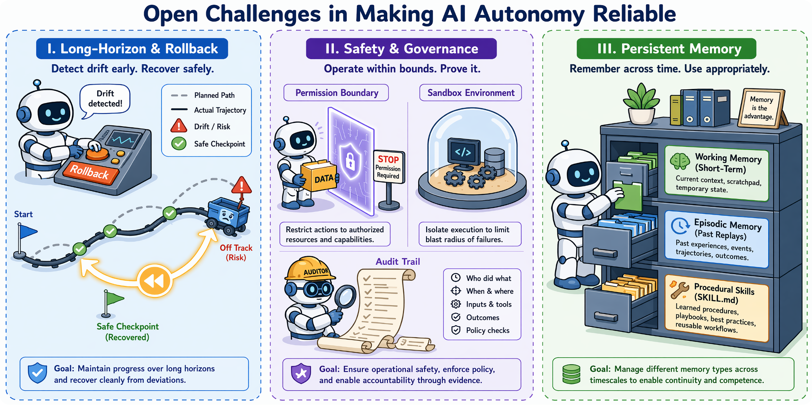
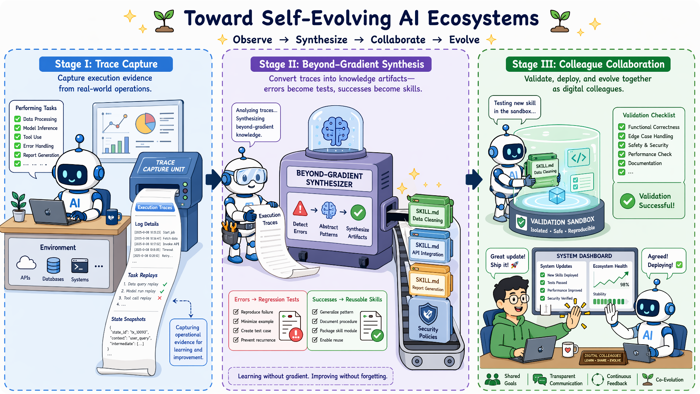
Current agents can look impressive in isolated demonstrations, but dependable digital work requires stable performance across long horizons, safe operation under permission constraints, and persistent memory that does not collapse as context grows. The challenge is not only stronger capability, but autonomous behavior that is auditable, recoverable, and controllable.
Agents must maintain progress until the intended workspace state is achieved. Tool errors, partial failures, and early planning mistakes can compound across many actions, so future systems need progress monitoring, intermediate verification, self-healing, and rollback to safe checkpoints.
Once agents can touch files, browsers, APIs, terminals, databases, and enterprise applications, safety becomes operational. Fine-grained permissions, risk-aware action validation, audit trails, sandboxing, and calibrated human approval are required for high-impact actions.
Long-running work needs more than a transient context window. Agents need working memory for the current trajectory, episodic memory for past interactions, procedural memory for reusable skills, and external state stores that preserve decision-critical facts while discarding noise.
The next stage is likely to be defined not only by larger foundation models, but by the ecosystems around them. Capability becomes distributed across prompts, context pipelines, tools, memories, workspaces, evaluators, skills, policies, and governance layers. In this view, operational experience becomes the material from which systems improve.
Prompts specify intent, context supplies task-relevant state, and harnesses define the operational world where actions have consequences. Future progress depends on execution substrates that make actions inspectable, constrained, replayable, and learnable.
A workspace gives the model a digital body: files, terminals, browsers, repositories, logs, snapshots, permissions, provenance, replay, rollback, and final-state diffs. These primitives make both safety and learning possible.
Improvement can happen outside model weights. A failed tool call can become a better wrapper, a repeated correction can become memory, a successful trajectory can become a skill, and a benchmark failure can become a regression test.
Skills need interfaces, versions, dependency contracts, tests, documentation, security review, and deprecation. Multi-agent systems also need shared state, ownership boundaries, escalation protocols, and final-state verifiers.
A governed self-evolving loop turns operational traces into durable assets: successful trajectories become reusable skills, failures become regression tests, user corrections become memories, tool errors become wrapper updates, and safety incidents become policies. Every consequential action should become evidence, and every durable update should be validated, versioned, auditable, reversible, and deployed under explicit permission boundaries.
Resources
Access the paper, code, citation, project page, and contact channel for Next-Generation AI Systems.
Use the BibTeX below as a placeholder until the final citation is available.
@article{next_generation_ai_systems,
title = {Next-Generation AI Systems},
author = {Author One and Author Two and Author Three},
year = {2025},
note = {Project page: https://next-generation-ai-systems.github.io/}
}